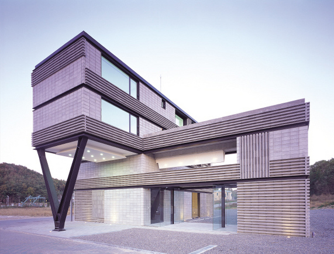

건축가가 돼는 과정이 꽤나 처음 보기에는 복잡하여서 정보들을 수집한후 주요한것들을 요약하여서 보기 쉽게 알려주기위해 이 사이트를 제작함.
- 선택과목
- 학과 선택
- 건축사로 가는길
각각의 텍스트를 클릭하시면 정보를 보실수 있습니다.

고등학교에서 선택해야하는 과목

필수과목
고등학교 2학년과정 - 물리학 I, 화학 I, 지구과학I, 생명과학I 중 택 3
고르는이유는? > 고등학교 3학년 과목을 배우고위해서는 필수적!
고등학교 3학년과정 - 기하,수학과제 탐구/공학 일반/ 물리학 II,화학II...중 선택
건축학과는 수학,과학적인 능력이 중요하므로 적당한 선에서, 자신과 잘 맞는 과목과 건축학과의 맞는 과목을 타협해 나가면서 선택하는것이 중요합니다.
태성고등학교 login동아리 10720 최원영이 제작함.